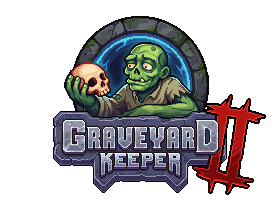

Graveyard Keeper 2 Wiki


Welcome to the Graveyard Keeper 2 Wiki! We're a collaborative community about Graveyard Keeper 2 created by fans and for fans like you! This wiki is an online encyclopedia which anyone can edit and contribute to, creating a new page or improving an existing one. If you're new and don't know where to start, feel free to reach out to one of our administrators or check out these Fandom help pages!
Information
| System | Characters | Locations | Versions |
|---|---|---|---|
| Mechanics | Quests | Technologies | Study |
About Graveyard Keeper 2
The most inaccurate medieval cemetery sim is back!
Restore The Town, manage the graveyard, automate production, lead your undead army into battle and turn the zombie problem into a thriving business! Graveyard Keeper 2 is the grotesque sequel that’s deeper than six feet, and more unhinged than ever!